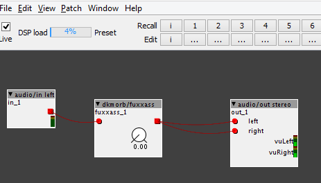

1) Performance: 
2) As first step, to understand, I edit c code to compile directly. But IMHO it's a good starting point.
Converting a fuzz model from Spice?
paco
#21
paco
#22
I have just connected the two parameters (fuzz and level) in the flow; but maybe I'm wrong ... can someone take a look?
fuxxass.axo (8.9 KB)
Gavin
#23
Gave it a go on my bass, only using your object, no others except in and out.
The sound is fantastic..
The fuzz dial, doesn't seam to change anything until it goes to 0.00, it sound like double effect, but anything above that seams to stay the same.
The level dial, not quite sure what level you are adjusting here, is it the amount of effect to apply, because at 0.00 it should go straight through with no effect, but it doesn't, and I don't think you need to do this, because a fader object can easily achieve this. In fact it sound more like the level dial should be used as the fuzz dial instead.
Obviously you have allot of gain in the effect, you can even hear it with both dials on 0.00. Can a dial be added to reduce some of it, not all, just a portion of it.
Hope this helps..
Looking forward to testing the final outcome. 
paco
#24
Oh, thanks Gavin! This is a big help for me!
I'm sure problems you reported are related to scaling value problem and, yes, probably I confused two parameter (level = gain and fuzz).
I would like to mention that this work is derived from algorithms WDF theorized by David Yeh and implemented by FAUST in Guitarix.
thetechnobear
#25
when I had a quick look before, it looks like when you use your parameters they are not called correctly.
(but I may be wrong, since Im not exactly sure of the scaling in faust of the sliders... but I'm assuming they probably be something like 0..1 ?)
sorry, I don't have a guitar to listen to the patch, so test it to see if my hunches are correct or not.
tip: what I tend to do when developing objects, is initially develop them as an embedded object within a patch. this allows it to be easily tested and edited, and also you can then share the patch here as one file with others
THEN once the object has reached 'maturity' I save it into a library (e.g. the community if Im going to be sharing it)
this is all a bit easier for others, since it mean they don't need to download the object, put it into there object library, create a test patch to run it.
(i do it as a matter of course now, as you never know when you want to share an object during development for some help/feedback)
paco
#26
tip: what I tend to do when developing objects, is initially develop them as an embedded object within a patch. this allows it to be easily tested and edited, and also you can then share the patch here as one file with others
THEN once the object has reached 'maturity' I save it into a library (e.g. the community if Im going to be sharing it)
Ok!
paco
#27
Hi,
as thetechnobear recommended, here the embedded object within a patch.
fuxxass_patch.axp (10.0 KB)
Just a note: CPU performace indicator now shows 12%...??? Why?
Gavin
#28
will give it a test later tonight, (Australian Eastern Standard Time) about 12 hours away...
I can only guess that the CPU performance is because there is a lot going on in your object.
Maybe overtime there will be a chance to scale the code down or something, besides how much more do you need if you have your fuzz ?
Gavin
#29
Tested !
I only got 4% CPU usage.
Fuzz dial still doesn't do anything unless on 0.00.
I think the level dial is plenty good enough on its own.
One thing I did notice, is if you apply any other objects that increase the gain, you will get more clipping, so need to drop the levels to keep the effect. Or maybe it was just me.. 

thetechnobear
#31
I wonder if its a platform thing.... Im running 10.0.11 on OSX 10.11 and getting 4% when I run it.
(this is with no audio coming in)
did it change when you made it embedded? this should not make a difference.
BTW: it would be handy if you filled in your setup as per this post
johannes
#33
Ah the difference in cpu load observed between 1.0.11 and development/git comes from a compiler flag I modified in the development repository: -fsingle-precision-constant. The reason for removing this compiler flag was that it breaks the STL library. I believe this specific compiler flag is a bit dirty, not so portable, as it gives the same code a different interpretation (that may or may not be relevant in reality depending on the sensitivity of numerical precision), and think it is better practice to explicitly write single-precision float constants, like 2.44402781742033e-09f instead of 2.44402781742033e-09
Suffixing all float constants will result in the same cpu load again.
I see the "post processing" step is disabled in the code, while I expect it to make a huge difference.
But it appears to "blow up" numerically when this step is enabled.
paco
#35
So, i've to correctly model two pots "Fuzz" and "Gain" ("Level"):
In FAUST script, "Fuzz" is a slider, with default value set to 0.5, min value 0.0, max value 1.0 and step 0.01...
By the way, I need to obtain this value from param_fuzz doing something like this:desiredFuzzValue = trunc((param_fuzz/64), 2);
What do you think about?
mtyas
#36
Sorry, I can't help you with any code, but I just wanted to say that I really like the sound of this model.
It does apply a lot of gain, but I found that taming it on the input gives it quite a nice range of coloring. Can't wait for the new version (when you get your head around it)
Thanks for the hard work. Any ideas of what you would like to model next ?
paco
#37
1) I work on this "model porting activity" just 1-2 hours/day (when my wife...);
2) I'm proud my work likes;
3) My target is to correctly drive the two pots (Fuzz and Gain), following a logarithmic scale;
4) Next model: I would like to port a tone stack collection (fender, marshall, bogner, etc)...or not? Then a pair of tube model (12AX7 and ECC83)?
 !
!
Gavin
#40
Any classic overdrive will do, anything that will span between boost - overdrive - distortion is better.
I've tested so many, I don't refer to them as models anymore, just ones I like and dislike and are too expensive.
So I collect used cheap ones from pawn brokers.
One I picked up for $15 spans really well over the three parts, and it has separate drive and gain pots, with a switch for dual octave.
I am a bit (well massive) bass overdrive nut, I luv over drive in all forms, addicted to it.
Since it is a request, I don't want to make it too difficult, considering the results you got with the Fuzz, I am sure whatever you get will be far better than anything I can get through working the modules.
Why don't you keep it easy and use the overdrive code on the "Guitarix" site where you got the fuzz model from.